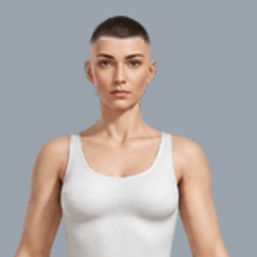
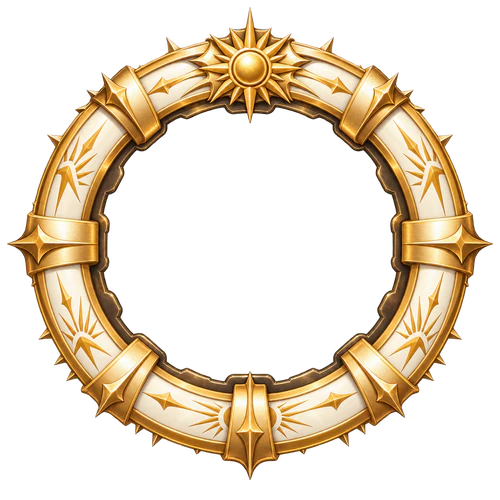
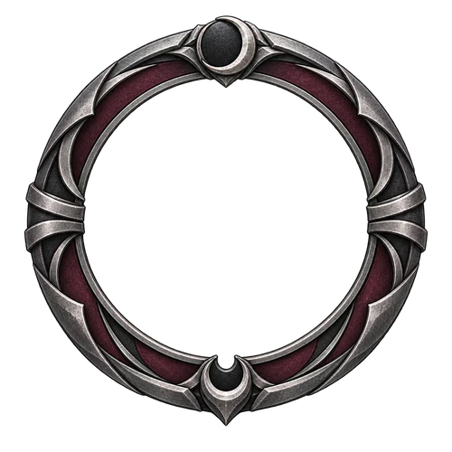
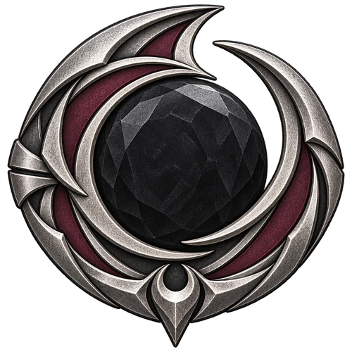
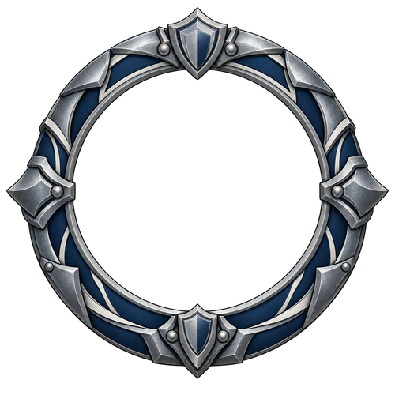
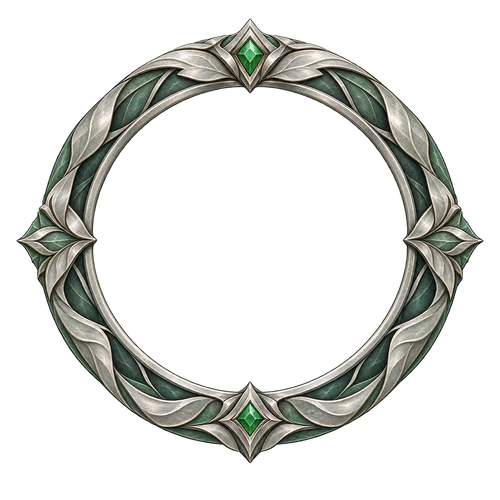
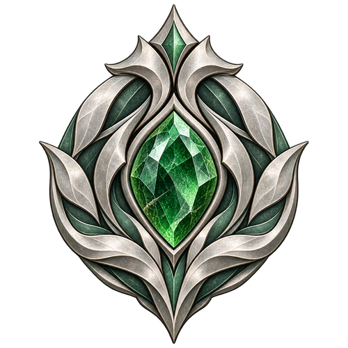

Zênite I
01/01 — 20/03/2027

Bordas vazadas, banners com o nome e insígnias. Arquivos leves integrados ao catálogo local, com avatar do próprio projeto. Cadastro no servidor e temporadas futuras ainda pendentes.







WEBP de produção: 675 KiB nas 12 peças, com alpha preservado. Mestres PNG e WEBP sem perdas guardados. Os arquivos grandes da geração estão preservados em sources/. Paletas iguais às propostas de skin; as skins continuam com revisão de encaixe pendente.